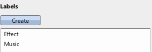
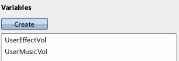
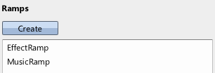
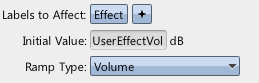
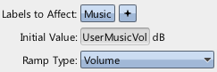

|
Applying User Volumes |
| Navigation |
This guide will demonstrate how to categorically adjust the volume of sounds based on game input. This will introduce hooking Ramps up to Variables.
Requisite Terminology
New Terminology
None!
Steps


These variables are assumed to be set by the game. They should be assigned to the decibel volume desired for the sounds with the labels Effect and Music, respectively.

These ramps are going to do the actual work - they will update the actual volumes for the desired sounds, but first they must be set up.


Since ramps, by default, affect all sounds, we need to adjust the label query for each ramp such that they only affect the desired sounds. For
the EffectRamp, we want it to only affect sounds with the Effect label, so we set the label query to that. Similarly for MusicRamp.
In order to tie the volumes to the variables the game sets, we assign the Target Value for the ramp to the respective variable using the "Assign Variable" button.
At this point, everything is ready. We don't ever need to use an Apply Ramp event step, because the ramp will "chase" the variable's value at all times. Note that this means that the volume will move as fast as the variable changes!
 Limited Sound Counts Limited Sound Counts |
 Sound Designer User Guide Sound Designer User Guide |
 Persisted Presets & 3D Sounds Persisted Presets & 3D Sounds |

|
Miles Sound System 9.3b
E-mail miles3@radgametools.com for technical support. Copyright © 1991-2012 by RAD Game Tools, Inc. All Rights Reserved. |

|